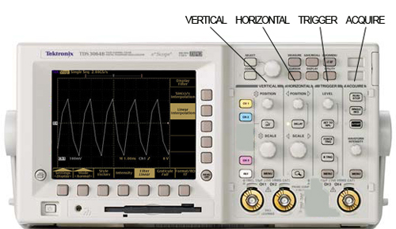
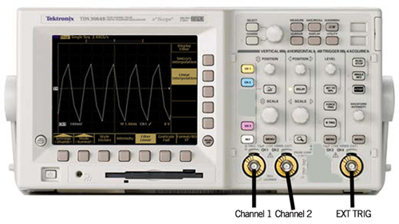
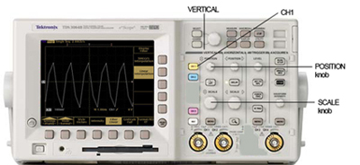
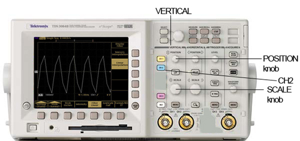
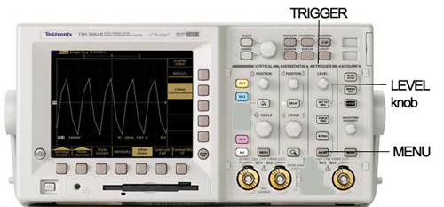
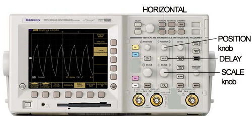

Proprietary to General Electric
Direction 5670000, Rev# 1
Module Version 13.0, Version Date 2/2/10
Proprietary to General Electric |
| ||||
| Ferrous Tools! | ||||
| The magnet attracts dummy loads which contain ferrous material. | ||||
| Place dummy loads as far away from the magnet as possible. |
| ||||
| Ferrous Tools! | ||||
| The magnet can damage the oscilloscope. | ||||
| Keep the oscilloscope outside the magnet room. |
Ensure that the system is idle and remove all portable coils from the bore.
On the Driver Module in the Penetration (Pen) cabinet, set Switch 2 (SW2) to TR DISABLE .
Set the 1dB/step and 10db/step rotary attenuators to 4db and 40db, respectively (decibel (dB) ).
On the Exciter/Ref Clock module located in the Pen cabinet, set the RF Enb switch down (Disable).
Set up the head coil and loader as indicated in the setup diagram for the test you need to run. Select the setup diagram from the following table.
If you are running the Exciter, Headdummy, or Bodydummy loopback tests, go to Step 7. If you are running a headsense or bodysense test, set up the oscilloscope:
Obtain a Tektronix TDS 3012B, 2-channel, 100MHz, color Digital Phosphor Oscilloscope. The front panel of the scope is organized into VERTICAL, HORIZONTAL, TRIGGER, and ACQUIRE groups of controls. These four names are used below to help locate the various controls:
Illustration 3: Four O-Scope Control Groups

Plug the scope into an available Power/Gradient/RF (PGR) cabinet service outlet outside the magnet room and turn the scope power ON.
Use a BNC cable to connect the RTO output J3 on the front panel of the Exciter to the channel 1 (see Illustration 4) input of the scope. Set the RTO select switch of the exciter to its Rho position (the lowest OR right most position depending on switch mount orientation.
Illustration 4: Scope Channel Locations

Take the BNC cable at the end of the loopback path setup for headsense or bodysense modes and connect it to the channel 2 input of the scope (see Illustration 4).
Use a BNC cable to connect the “in view” signal output J5 on the front panel of the Exciter to the EXT TRIG input of the scope (see Illustration 4). This signal indicates when data is collected during each TR interval of the Manual Pre-Scan entry point and is used to trigger the scope.
On the Exciter module in the Pen Cabinet, set the RF Enb switch to up (enable) or reconnect J14 on the RF amp or J11 on the Interface Panel
Landmark as indicated in the reference diagram for the test you are running (see Table 1), and Move to Scan.
Select RFA Tool in the service browser (see Illustration 5).
Select Loopback Mode for the present setup (see Illustration 6).
Select RF Pulse Type (initially use default).
Select Gradient State (use the default).
Click [Start].
If the selected loopback mode is either headsense OR bodysense, follow the instructions in Monitoring the Loopback Signal Using an Oscilloscope to examine the loopback signal. Otherwise, go to Step 9.
Check the loopback setup according to the pop-up request, then click [Continue].
A message box appears as shown in Illustration 8. Click the Patient icon on upper right corner of the display as shown in Illustration 7.
Slowly increase TG to 200 while adjusting the rotary attenuators (to prevent receiver overload indicated by R2% >100) until you achieve an R2% display on the manual prescan page of 84-94% with TG=200.
When done, use Toolbelt icon to return to service window and start scan by selecting [Proceed & auto-scan]. See Illustration 8.
After the scan and analysis ends view the results. Select the pop-up choice to erase the displays. The plots are saved as .jpg files under /usr/g/service/cclass/RFA/.
If you want to perform another test in the same Loopback Mode, then go to Step 3.
If you want to perform another test in a different Loopback Mode, then go to Step 2.
This procedure applies only if you are running in headsense OR bodysense Loopback mode. When you have completed this procedure, go to Perform Test, Step 9
Press the black Autoset button under ACQUIRE control.
Press the gray MENU button under the VERTICAL controls.
Illustration 9: O-Scope Vertical Menu

Press the yellow CH1 button under VERTICAL controls.
Illustration 10: Vertical Controls with CH 1

Press the Coupling button on the bottom of the display:
Select GND on the right of display.
Select 1 MegOhm on the right of the display (very important)!
Use the VERTICAL/SCALE knob to set to 100mV/div. (See Illustration 10.)
Use the VERTICAL/POSITION knob to vertically center the yellow plot on the horizontal center line of the screen at 0 volts. (See Illustration 10.)
Select DC on the right of the display.
Press Invert on the bottom of the display.
Select Invert Off on the right of the display.
Press Bandwidth on the bottom of the display.
Select Full Bandwidth on the right of the display.
Press the blue CH2 button under the VERTICAL controls.
Illustration 11: Vertical Controls with CH 2

Press the Coupling button on the bottom of the display.
Select GND on the right of the display.
Select 1 MegOhm on the right of the display (very important)!
Use the VERTICAL/SCALE knob to set to 100mV/div. (See Illustration 11.)
Use the VERTICAL/POSITION knob to vertically center the blue plot on the horizontal center line of the screen at 0 volts. (See Illustration 11.)
Select DC on the right of the display.
Press the Invert button on the bottom of the display. Select Invert Off on the right of the display.
Press the Bandwidth button on the bottom of the display. Select Full Bandwidth on the right of the display.
Press the MENU button under the TRIGGER controls.
Illustration 12: Trigger Controls

Press the Type button on the bottom of the display to select Edge.
Press the Source button on the bottom of the display. Under A Trigger Source on the right of the display select Ext (external).
Press the Coupling button on the bottom of the display. Under A Trigger Coupling on the right of the display select DC.
Press the Slope button on the bottom of the display. Under A Trigger Slope select the positive going slope.
Press the Level button on the bottom of the display. Under A Trigger Level select the positive slope level. Use the small TRIGGER/LEVEL knob to set the level to 300mv (the value is displayed on the screen. (See Illustration 12.)
If a small green light to the left of the DELAY button under the HORIZONTAL controls is lit, then press the DELAY button to shut it off.
Illustration 13: Horizontal Controls

Adjust the HORIZONTAL/POSITION knob so that the red T value at the bottom of the display reads 0%. At this point the small red T at the top of the display should be all the way to the left side of the display time line. (See Illustration 13.)
Adjust the HORIZONTAL/SCALE knob to set 800μs/div (the value is shown after the M at the bottom of the display). (See Illustration 13.)
Press the blue CH2 button under the VERTICAL controls. Adjust VERTICAL/SCALE knob to expand the blue RF pulse to the maximum vertical height without going outside the display. (See Illustration 13.)
Press the yellow CH1 button, then press the gray MENU button under VERTICAL controls. Adjust VERTICAL/SCALE knob to expand the yellow envelope pulse to the maximum vertical height without going outside the display. (See Illustration 11.)
Select Fine Scale on the bottom of the display. Use the large unmarked multipurpose knob at the top of the scope to adjust the fine scale amplitude of the yellow envelope pulse until it is coincident with the envelope of the blue RF pulse.
Increase TG to 200.
This is a visual test only. The two waveforms should be similar.
The following sample plot results are Inter-pulse Stability (created in Standard Test mode only)
PkMag
Integ
0-order Phase
1-order Phase
The following sample plot results are Intra-pulse Fidelity (created in Exp(onential) Test mode).
Magfit
Magdif
Phafit
Phadif
When finished with the loopback test restore the cabling to the default clinical state.
On the Driver Module in the RF System cabinet, switch the TR Drive switch (SW2) to TR ENABLE.
Perform a quick scan to verify the system is operating properly.